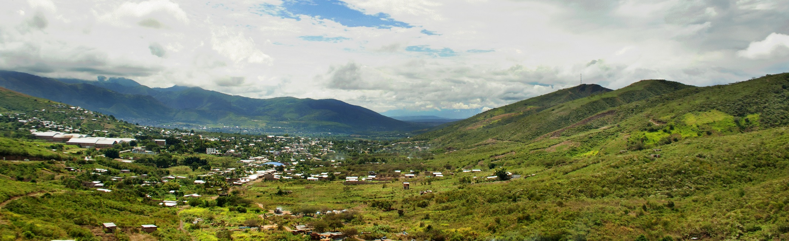
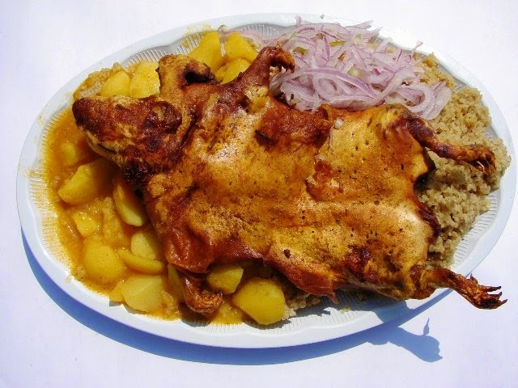
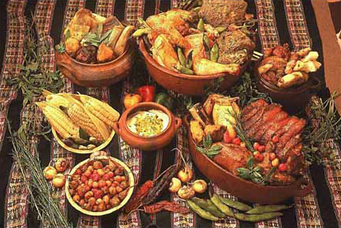
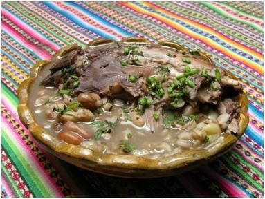
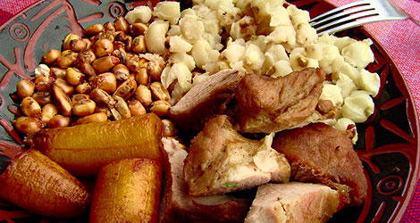

Comidas de la Sierra
|  |  | |
| Picante de Cuy | Comida Variada |
Descripción
 Los andes peruanos conforman la parte central de la cordillera de los andes, atravesando todo el territorio del Perú de norte a sur. Dentro de la geografía del Perú se constituye una región natural que también se denomina región andina o región de la sierra. La región andina es un concepto orográfico, biogeográfico y cultural. El clima de la sierra está relacionado con la altitud, latitud y la cercanía a la costa desértica o a la selva húmeda. Se considera que el clima serrano característico va de subtropical a frío, con aire muy seco y tiene dos fases estacionales, una lluviosa entre noviembre y marzo, y una seca de abril a octubre.
 La sierra peruana se caracteriza por tener remembranzas de culturas prehispánicas en sus comidas típicas. La presencia de las papas, habas y maíz, son elementos que naturalmente fueron utilizados por colonia nativas de los valles del Perú. Productos introducidos como el arroz, el pan y las pastas son hoy también de consumo popular, la variedad de carnes consumida ha enriquecido con vacunos, porcinos y ovinos; en lugares muy elevados como Huancavelica aún se consume carne de llama, de alpaca y animales silvestres. La variedad y riqueza de la comida andina es similar a la de la comida costeña. Desde el cuy chactado a la sopa de morón y de la papa a la huancaína a la sopa chario, y demás postres sumamente originales que se consumen frescos o cocidos de diversas maneras. El caldo de cabeza y las costillas de carnero doradas son una pequeña muestra de un amplio catálogo de comidas que se han difundido. Entre los platos más destacados de la cocina de la sierra peruana se encuentran: la pachamanca, la patasca, el caldo de cabeza, las humitas, la ocopa, etc.